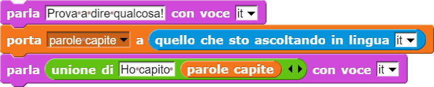
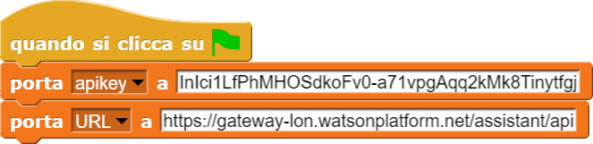

Effettua la sintesi vocale di una parola o frase (primo parametro) utilizzando la voce indicata nel secondo parametro.
Fare doppio clic sul file scaricato per aprirlo e lasciarlo in esecuzione in background.
NB: Se non state utilizzando Chrome Web Browser alcune funzioni potrebbero avere dei problemi.
Effettua la sintesi vocale di una parola o frase (primo parametro) utilizzando la voce indicata nel secondo parametro.
Registra la voce e la analizzata sulla base della lingua specificata nel parametro (ad esempio: "it" per italiano,
"fr" per francese, "en" per inglese, "es" per spagnolo, e così via). Il parametro "default" sta ad indicare la lingua
della voce selezionata nella pagina dei "settings" del TJBot. Infine, il blocchetto restituisce una parola o frase
di testo scritto corrispondente a ciò che Watson è riuscito a riconoscere nei suoni registrati.

In questo esempio, il TJBot incita a dire qualcosa, poi registra la voce e salva le parole comprese in una variabile
precedentemente creata. Infine il TJBot parla dicendo l'unione della frase "Ho capito..." e delle parole capite.

Copiare e incollare le proprie credenziali, costituite da apikey e URL, nei blocchi di SNAP come illustrato qui
sopra. Le variabili apikey e URL sono già presenti in ogni nuovo progetto.
Thanks to eCraft2Learn for their amazing work!